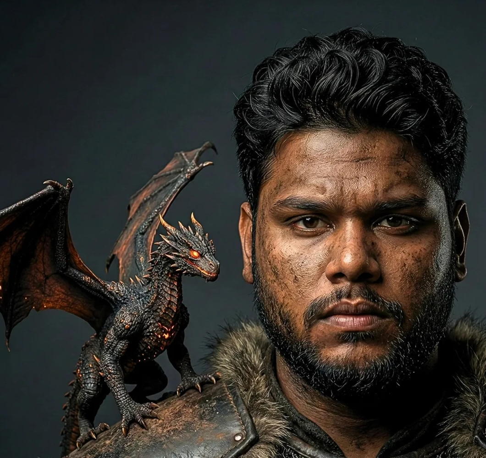
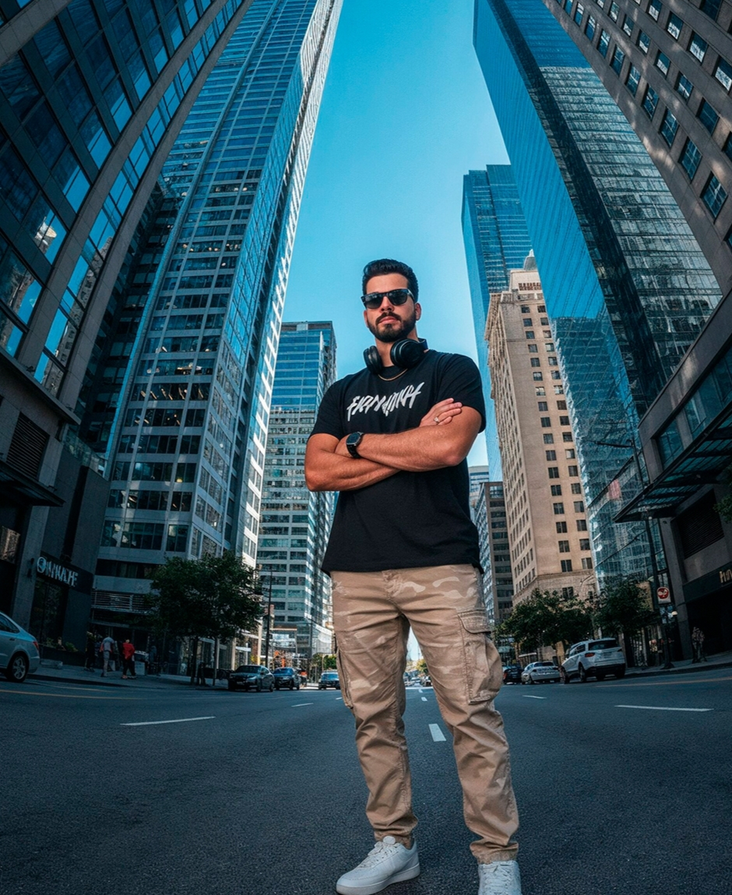
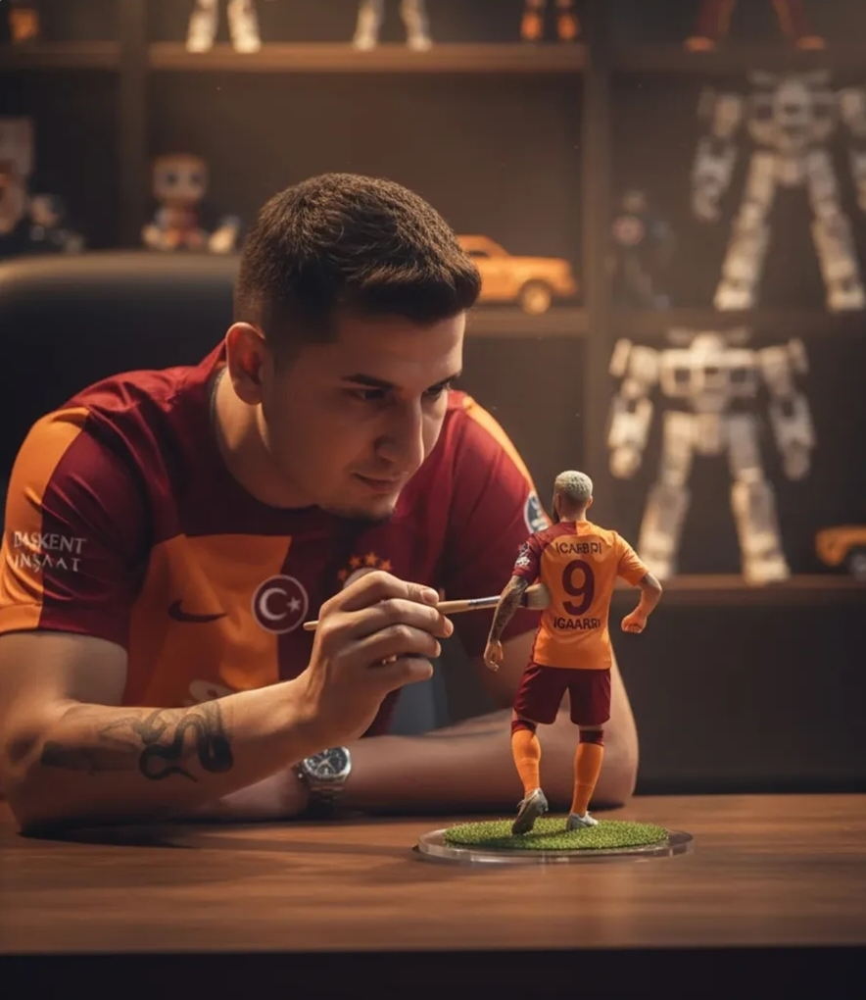
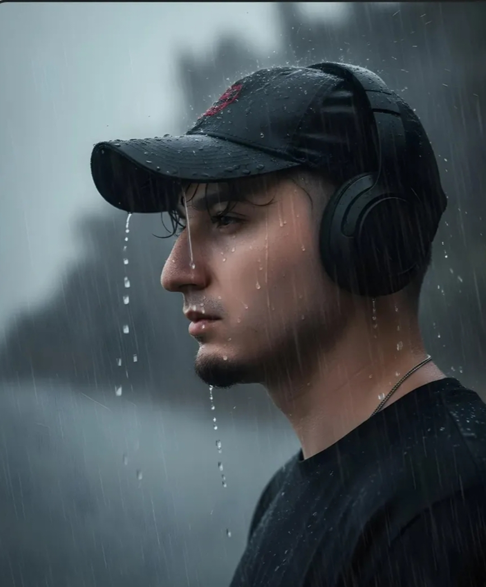
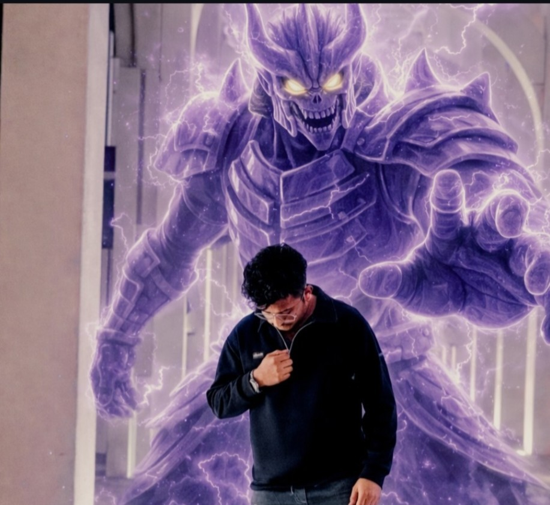
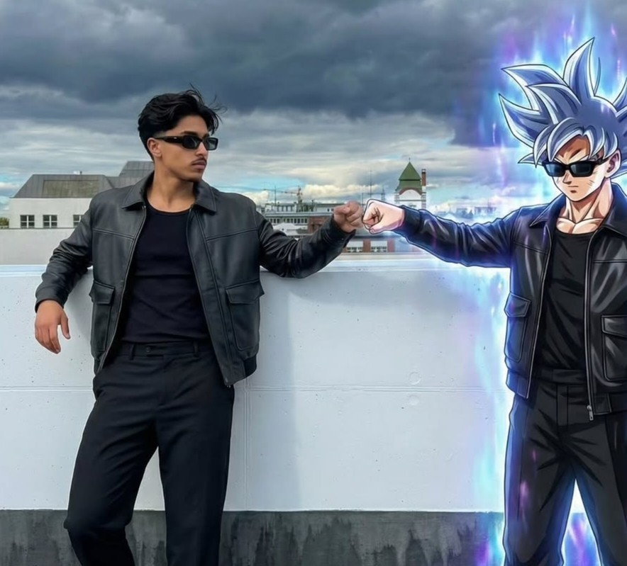
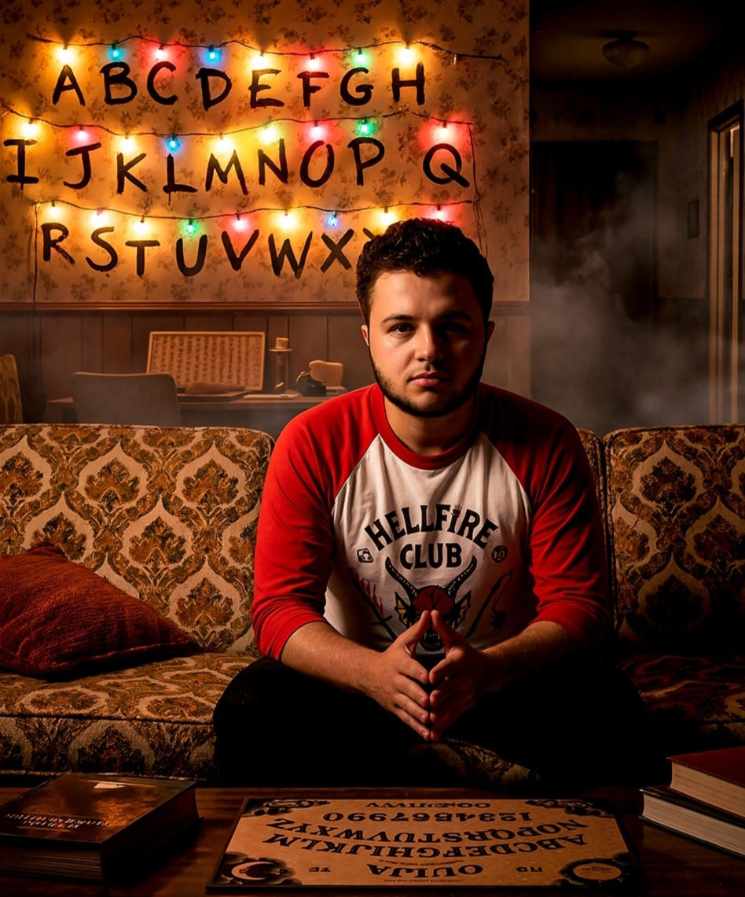
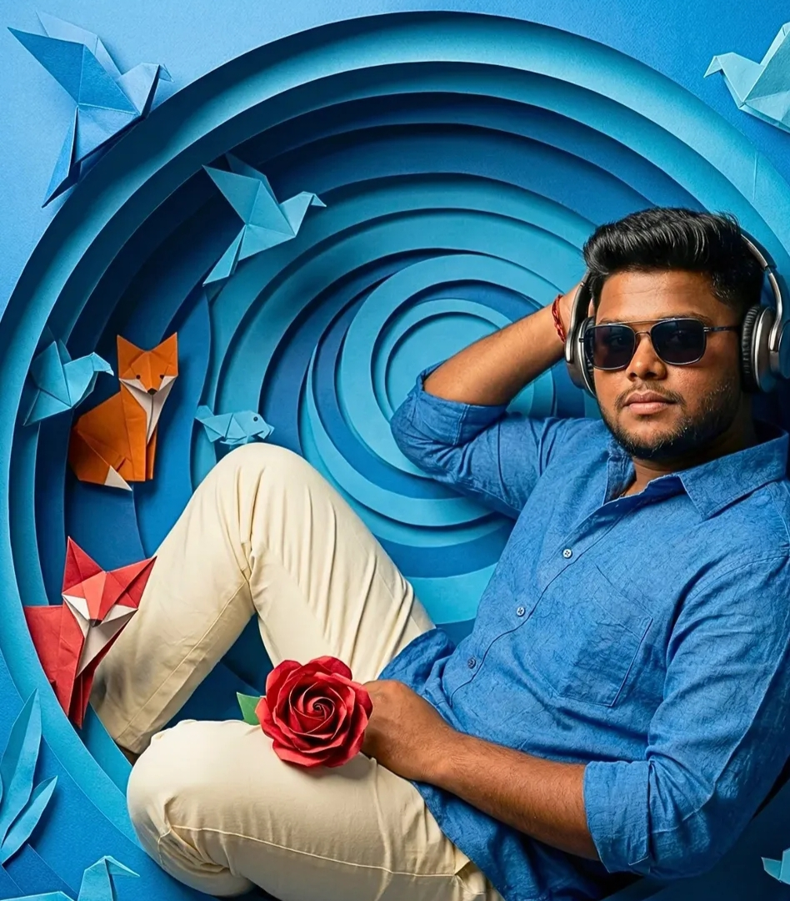
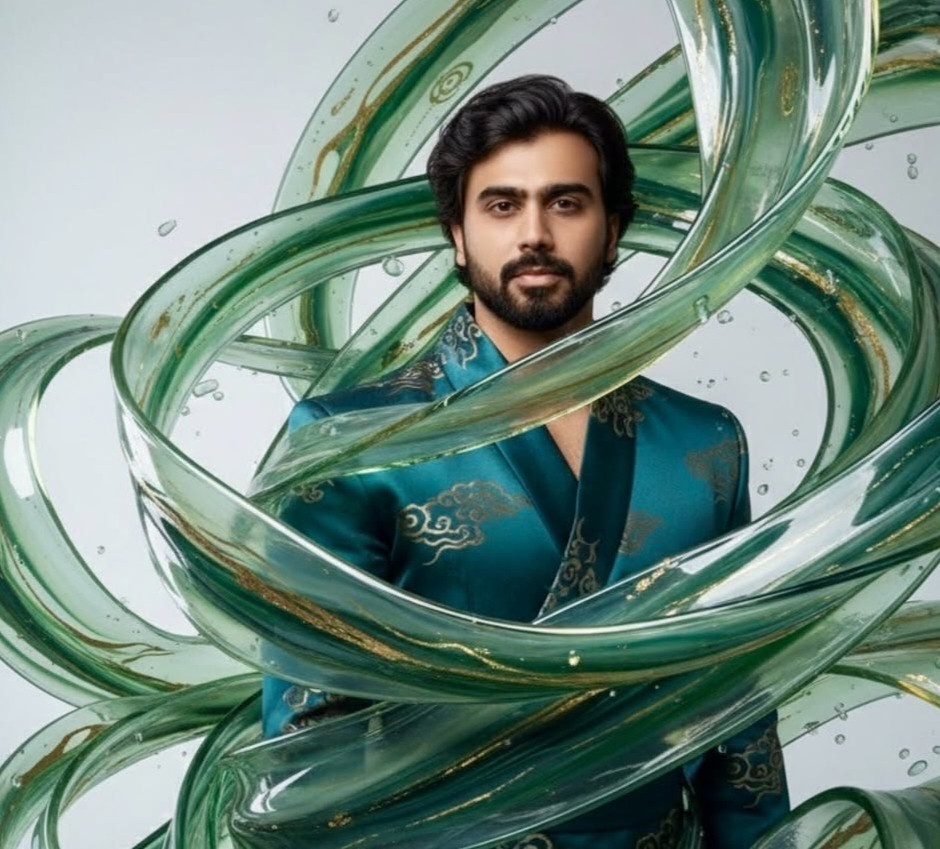
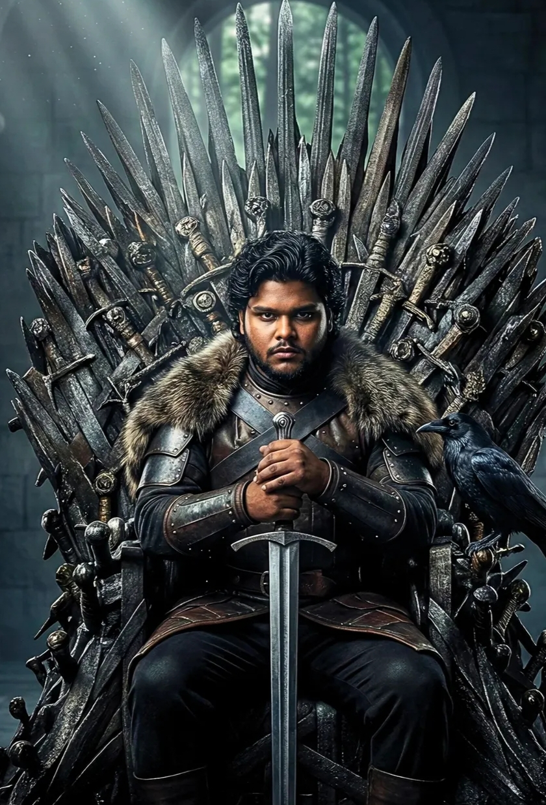

CATEGORIES
 All
All
 Celebrity
Celebrity
 Fantasy
Fantasy
 Anime
Anime
 Portrait
Portrait
 Sketch
Sketch
TRENDING PROMPTS

Dark-Fantasy Warrior
Create an ultra-realistic, dark-fantasy portrait of a male warrior in a Game-of-Thrones-style setting. The man is positioned on the right side of the frame and features dark, wavy hair, a full beard, and a serious, intense expression. His skin is slightly dusty and battle-worn, adding a gritty cinematic realism. A small dragon with ember-glowing eyes and burnt-charcoal textured scales sits fiercely on his shoulder, wings half-open as if protecting him. The background is a minimal, soft grey atmosphere with dramatic fantasy lighting. The man's face structure, features, and expression must match the uploaded face 100% exactly -perfect facial accuracy with no changes. Ultra-detailed textures, 8K realism, strong warrior aesthetic. This stunning depiction is envisioned in an ultra-high 8K resolution with a 4:5 aspect ratio, boasting high-end photo retouching that captures even the slightest details-from the subtle grains of texture to the precise alignment of facial features-eyes, nose, mouth, eyebrows, and ears-all mirroring the reference image flawlessly. The image must look exactly like a real photograph, with no graphic elements, illustrations, digital art, drawing effects, cartoon textures, stylized rendering, CGI, Al-art look, or smooth plastic skin. Preserve natural lighting, natural shadows, real-world imperfections, realistic skin texture, pores, micro-details, fabric texture, depth of field, and real optical effects. No fake colors, no harsh sharpening, no HDR effect, no fantasy elements, no artistic brushstrokes, no posterization. The final output should look indistinguishable from a real camera photo with complete natural realism. Strictly avoid any graphic look. Negative Prompt: illustration, digital art, vector, painting, drawing, anime, cartoon, 3d render, CGI, texture patterns, flat colors, airbrush effect plastic skin, smooth skin, stylized, posturized, HDR, over-processed, artificial lighting, fake details, unrealistic skin, watermark, glitch, blur, oversaturated colors, fantasy elements.

Urban Streetwear Portrait
Create an ultra-realistic cinematic streetwear portrait of a confident man standing in the middle of a modern city surrounded by tall buildings under a clear blue sky. The image must have a low-angle fisheye perspective, giving a dynamic and powerful composition that makes the subject appear dominant and stylish.Use the first reference image as the base for pose, outfit, lighting, and perspective. Maintain the same body posture, outfit style cargo pants, headphones around the neck, sunglasses, and the urban cityscape with sky-scrapers converging upward. Keep the same camera angle and framing so that the viewer teels as it they are looking up from street level. Use the second reference image for facial integration. Replace the model's face with the one from the second reference photo, blending it naturally with the lighting, shadow direction, and facial orientation. Ensure perfect skin tone blending and reflection consistency on the sunglasses for a realistic, seamless composition, Maintain proportional accuracy, expression realism, and high fi-delity between both reference sources. Lighting: natural daylight with soft shadows and a high-contrast cinematic tone. Sunlight should reflect subtly on building surfaces and sunglasses, pro-ducing an authentic midday aesthetic. Color palette: a balanced mix of warm skin tones with cool tones from the sky and architecture, emphasizing depth, contrast, and harmony. Outfit: streetwear fashion - loose t-shirt with printed text, beige camouflage cargo pants, and modern sneakers, Keep textures crisp, realistic, and detailed, including fabric weave and stitching visibility. Environment: urban street canyon surrounded by tall modern buildings, ren-dered with slight distortion from the fisheye lens. Emphasize architectural depth and subtle background motion with blurred pedestrians, vehicles, or trees to enhance realism. Camera: 16mm wide-angle lens, low-angle full-body shot, cinematic depth of field, emphasizing the subject's presence against the upward city perspec-tive.

Galatasaray Figurine
A hyper-realistic 1/7 scale figurine of Mauro Icardi in Galatasaray jersey #9, mid-action pose, on a round acrylic base with green turf. Scene: modern desk in a cinematic studio, warm dramatic lighting, toy collections softly blurred in background. Nearby, the referenced person in a Galatasaray jersey carefully brushes the figurine. Premium, polished, filmic atmosphere with deep contrasts.

Raining Portrait
Close-up portrait of a young 21 year old boy attached photo in the rain, seen from profile, looking into the distance with a melancholic expression. He is wearing a dark baseball cap with a red detail and black over-ear head-phones. His heavy dark hair is tousled by the coastal wind, full of texture and movement. Raindrops are clearly visible on his skin. The background is a heavily blurred, dark, rainy outdoor scene with visible streaks of falling rain.

Sasuke Uchiha Portrait
Use my uploaded photo as the main character reference and keep my face, facial structure, skin tone, hairstyle, and expression EXACTLY the same (100% identity preservation). Do NOT change the background, location, lighting, camera angle, clothes, or my body pose-everything must remain exactly as in the original image. Add Sasuke Uchiha's Susanoo from the Naruto series summoned directly behind me, perfectly aligned with my body, anime-accurate in structure and proportions, with glowing purple chakra armor, yellow glowing eyes, skeletal armored face, and semi-transparent chakra texture. The Susanoo should look like it is protecting me, towering behind me, with subtle purple chakra aura, light energy sparks, and faint lightning only around the Susanoo and slightly around my body. Do NOT make the Susanoo cartoonish-render it more realistic, high-detail, and grounded, with clean anime accuracy blended into a realistic, cinematic look, while keeping the original background completely untouched and natural.

Goku vs. Myself Portrait
A full-body ultra-realistic portrait on a modern rooftop under a dramatic, stormy sky with heavy dark clouds and thunder lighting. A young stylish man stands on the left, leaning casually against a white concrete rooftop wall, extending his fist forward for a fist-bump. On the right stands Goku, seamlessly integrated into the real-world environment, returning the fist-bump in perfect alignment and scale. Both characters are wearing the exact same outfit: a premium matte black leather jacket with structured shoulders and front flap pockets, worn over a fitted black crew-neck t-shirt; relaxed-fit black tailored trousers with a clean straight fall; and minimal white low-top sneakers with subtle detailing. The outfit looks modern, monochrome, luxury streetwear inspired, identical on both characters. My appearance: quiff-style tousled mid-length black hair with natural volume and texture, a light neatly groomed mustache, sharp jawline, confident expression. Wearing black rectangular sunglasses with a glossy finish. Goku's appearance (goku in ultra instinct form and add aura from goku body): anime-accurate facial structure and expressions, Ultra instinct form and aura from goku body, sharp anime eyes, but rendered in a high-end semi-realistic anime-to-realism hybrid style. He is also wearing black rectangular sunglasses, matching the same outfit perfectly while retaining anime skin shading and linework. Scene & composition: Urban rooftop setting with industrial city buildings in the background, subtle depth of field. The camera is at eye level, full-body framing, symmetrical composition with the fist-bump as the focal point. Lighting & quality: soft natural daylight with cinematic contrast, realistic shadows, ultra-sharp focus, high dynamic range, realistic fabric textures, leather grain visible, wind subtly affecting clothing. Shot on a high-end DSLR look, 8K resolution, photorealistic + anime fusion, clean color grading. Keep Ratio: 3:4

Stranger Things Portrait
A man with the exact real facial structure, proportions, short dark wavy hair, defined beard and light skin tone of the provided face, sitting in the same pose on the patterned retro sofa with hands clasped together, leaning slightly forward in a thoughtful stance, wearing a Hellfire Club-style shirt just like in the reference, fully replacing the character but keeping the exact silhouette. The environment remains identical: the Stranger Things living room with vintage wooden walls, floral wallpaper, glowing multicolored Christmas lights hanging above forming the alphabet letters, warm lamps casting soft golden light, fog subtly drifting from the hallway, the crocheted blanket patterns, the coffee table with Quija board and stacked. books everything in the same positions and perspective. The camera angle is perfectly centered and mid-shot, with increased dramatic depth of field and darker shadows, enhancing the mood. The lighting becomes more dramatic: deeper warm tones, stronger contrast, richer shadows, intensified glow from the lights, and enhanced atmospheric haze. Rendered in ultra-realistic 8K HDR with cinematic sharpness, deep blacks, crisp textures, warm color grading and a darker, moodier Stranger Things ambience replicating every detail of the reference scene while only replacing the character with the user's real appearance

Paper Art Portrait
Create an ultra-sharp, high-resolution image of a young Indian man with the same face as the reference image (no alteration, no distortion, no blur), featuring dark hair and a neatly groomed beard, lying sideways and propped on his left elbow, calmly gazing at the viewer; he is dressed in a paper-textured blue shirt and cream pants with a red rose resting on his lap, while wearing stylish sunglasses on his face and modern headphones over his head; the entire scene is set inside a circular, layered blue paper world filled with intricate origami animals, illuminated by soft yet dramatic lighting that enhances the textures, depth, and shadows of the handcrafted paper environment, creating a dreamlike, intimate, artful atmosphere with precise facial fidelity and refined paper-art aesthetics. This photorealistic, ultra-high-resolution image should be in a 4:5 aspect ratio, with 8K quality, high-end retouching, featuring hyper-detailed textures and sharpness, and including grains. Ensure the face matches perfectly, including the eyes, nose, mouth, and eyebrows, as in the referen28 image.

Marbled Glass Portrait
Subject: A handsome, young, and fit man with the exact same face and facial features from the uploaded selfie. Medium vertical portrait from the waist up. Overall feel: It should look like the man is almost engulfed inside a storm of marbled glass and liquid jade. The swirling marble glass shapes are the main focus, the robe and body are more minimal and partly hidden. Outfit: Simple yet regal masculine Gucci inspired asian robe with structured shoulders and clean straight lines, in deep teal and muted gold silk. Subtle cloud patterns but not too busy, only enough to anchor the character. No armor, no suit jacket, no extra accessories Marble glass storm: A dense, dramatic explosion of translucent marbled glass ribbons and sheets surrounds him and partly covers his torso and arms. The shapes are wide, layered, and organic, like liquid jade and champagne glass frozen in motion. Rich marbling inside each shape in teal, emerald, sage, gold, and soft silver. Edges are smooth and glossy with bright highlights. The ribbons twist, loop, and fold over each other, some coming forward in front of his chest and shoulders, others sweeping behind his head and far beyond the frame. Very high density and complexity, similar to the female reference image. The storm should feel heavy, sculptural, and three dimensional, not like light water splashes. Very few droplets, focus on thick marbled sheets and ribbons. Composition: Vertical image. Man slightly off center. His figure is clearly masculine but almost embedded inside the swirling marble glass storm, which fills most of the frame and background. Background: Clean minimalist studio background in soft white to pale cool gray, almost completely covered by the marble glass storm shapes. No props, no furniture, no extra elements. Lighting: Soft ethereal studio lighting that sculpts his face and jawline while making the marble glass storm glow. Strong highlights on the edges and marbling of the glass forms, soft shadows between overlapping layers to create depth. Style: High fashion conceptual portrait. Same rich teal and gold color palette and same dramatic artistic vision as the reference image, but with a clearly masculine subject. Ultra realistic, cinematic, extremely detailed, 8K resolution. The face must be completely photorealistic and must match the uploaded selfie exactly. No cartoon, no illustration style, no obvious CGI look on the face.

Game of thrones Portrait
Create an ultra-realistic, hyper-detailed cinematic portrait. The scene shows a powerful fantasy setting inspired by medieval dark lore. The man, positioned on the right, features dark, wavy hair, a full beard, and a serious, intense expression. He is seated on the iconic Iron Throne forged from hundreds of swords. He wears high-detail medieval leather armor with rich textures, dark brown boots, and gloves. He holds a large steel sword vertically with both hands resting on the hilt, symbolizing power and burden. Lighting is dramatic and moody, with soft light rays falling from behind and above, creating a heroic yet somber atmosphere. A raven sits on the left side of the throne, enhancing the mysterious fantasy theme. Background: A dim, ancient stone hall with tall pillars and a blurred forest visible through an arched window. Add rich, metallic textures to the swords and throne, sharp detailing to the armor, and cinematic depth. This stunning depiction is envisioned in an ultra-high 8K resolution with a 4:5 aspect ratio, boasting high-end photo retouching that captures even the slightest details-from the subtle grains of texture to the precise alignment of facial features-eyes, nose, mouth, eyebrows, and ears-all mirroring the reference image flawlessly. The image must look exactly like a real photograph, with no graphic elements, illustrations, digital art, drawing effects, cartoon textures, stylized rendering, CGI, Al-art look, or smooth plastic skin. Preserve natural lighting, natural shadows, real-world imperfections, realistic skin texture, pores, micro-details, fabric texture, depth of field, and real optical effects. No fake colors, no harsh sharpening, no HDR effect, no fantasy elements, no artistic brushstrokes, no posterization. The final output should look indistinguishable from a real camera photo with complete natural realism. Strictly avoid any graphic look. Negative Prompt: Don't smile or show teeth, illustration, digital art, vector painting, drawing, anime, cartoon, 3d render, CGI, texture patterns, flat colors, airbrush effect, plastic skin, smooth skin, stylized, posturized, HDR, over-processed, artificial lighting, fake details, unrealistic skin, watermark, glitch, blur, oversaturated colors, fantasy elements.